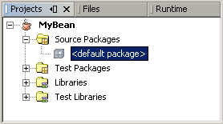
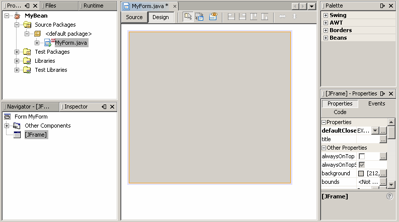
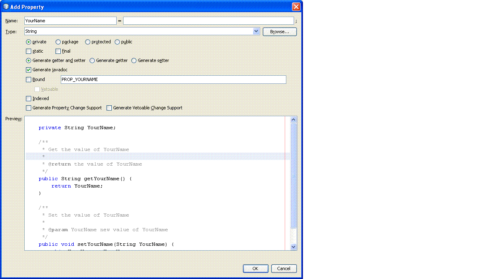
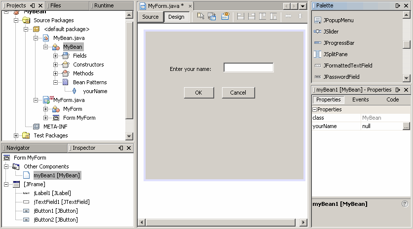

This lesson explains how to use the NetBeans IDE GUI Builder to work with
beans. In preparation for working with the GUI Builder, you should be first familiar with
the key NetBeans concepts which are explained in the
NetBeans IDE Java Quick Start Tutorial.
This lesson guides you through the process of creating a bean pattern in the
NetBeans projects, introduces the user interface of the GUI Builder, and explains
how to add your bean object to the palette.
Creating a New Project
In the NetBeans IDE, you always work in a project where you store sources
and files. To create a new project, perform the following steps:
- Select New Project from the File menu. You can also click the New
Project button in the IDE toolbar.
- In the Categories pane, select the General node. In the Projects pane,
choose the Java Application type. Click the Next button.
- Enter MyBean in the Project Name field and specify the project
location. Do not create a
Main class here, because later you will
create a new Java class in this project.
- Click the Finish button.
This figure represents the expanded MyBean node in the Projects list.

Creating a New Form
After creating a new project, the next step is to create a form within which
the JavaBeans components and other required GUI components, will be
placed.
To create a new form, perform the following sequence of actions:
- In the Projects list, expand the MyBean node, right-click on the <default package> node
and choose New|JFrame Form from the pop-up menu.
- Enter MyForm as the Class Name.
- Click the Finish button.
The IDE creates the MyForm form and the MyForm class within
the MyBean application and opens the MyForm form in
the GUI Builder.
This figure represents the Projects list, where the MyForm class is located.

The GUI Builder Interface
When the JFrame form is added to your application, the IDE opens the
newly-created form in an Editor tab with a toolbar containing the following
buttons:
-
– Selection Mode enables you to select one or
more objects in the Design Area.
-
– Connection Mode enables you to set a
connection between objects by specifying an event.
-
– Preview Design enables you to preview the form layout.
-
– Align commands enable you to align selected objects.
-
– Change Resizability enables you to set up vertical and horizontal
resizing.
When the MyForm form opens in the GUI Builder's Design view, three additional
windows appear, enabling you to navigate, organize, and edit GUI
forms. These windows include the following:
- Design Area. The primary window for creating and editing Java GUI
forms. Source and Design toggle buttons enable you to switch between view a
class's source code and a graphical view of the GUI components. Click on an
object to select it in the Design Area. For a multiple selection, hold down the
Ctrl key while clicking on objects.
- Inspector. Representation of a tree hierarchy of all the components in
your application. The Inspector highlights the component in the tree that is
currently being edited.
- Palette. A customizable list of available components containing groups
for Swing, AWT, Borders, and Beans components. This window enables you to
create, remove, and rearrange the categories displayed in the palette using the
customizer.
- Properties Window. A display of the properties of the component
currently selected in the GUI Builder, Inspector window, Projects window, or
Files window.
If you click the Source button, the IDE displays the application's Java
source code in the editor. Sections of code that are automatically generated by
the GUI Builder are indicated by blue areas. These blue areas are protected from
editing in the Source view. You can only edit code appearing in the white areas
of the editor when in Source view. When you make your changes in the Design
View, the IDE updates the file's sources.
Creating a Bean
To create your own bean object and add it to the palette for the bean group,
execute the following procedure:
- Select the <default package> node in the MyBean project.
- Choose New|Java Class from the pop-up menu.
- Specify the name for the new class, for example, MyBean, then press the Finish button.
- Open the MyBean.java file.
- In the editor window, select inside the class. Right-click and
choose Insert Code. Then select Add Property.
- In the Name field of the Add Property dialog box, type
YourName and press OK.

- Now you can analyze the automatically generated code. Notice that set
and
get methods were included:
public class MyBean {
/** Creates a new instance of MyBean */
public MyBean() {
}
/**
* Holds value of property yourName.
*/
private String yourName;
/**
* Getter for property yourName.
* @return Value of property yourName.
*/
public String getYourName() {
return this.yourName;
}
/**
* Setter for property yourName.
* @param yourName New value of property yourName.
*/
public void setYourName(String yourName) {
this.yourName = yourName;
}
}
- Right-click the MyBean node in the MyBean project tree and choose
Tools |Add to Palette from the pop-up menu.
- Select the Beans group in the Palette tree to add your bean.
Now you can switch to the Palette window by choosing Palette from the Windows menu and make sure that the MyBean
component was added to the Beans group.
So far you have created a bean, set the YourName property, and added this
bean as a component to the palette.
Adding Components to the Form
Now you can use the Free Design of the GUI Builder and add the MyBean
component and other standard Swing components to MyForm.
- Select the MyForm node in the project tree.
- Drag the
JLabel Swing component from the Palette window to the Design Area.
Double-click the component and change the text property to "Enter your name:".
- Drag the
JTextField component from the Palette window to the Design Area.
Double-click the component and empty the text field.
- Drag the
JButton component from the Palette window to the Design Area.
Double-click the component and enter "OK" as the text property.
- Add another button and enter "Cancel" as its text property.
- Align components by using the appropriate align commands.
- Before you drag the MyBean component from the Pallete you must compile
your project because the MyBean component is non-visual and cannot be operated
as a visual component. When you Drag and Drop the MyBean component it will not
appear in the Design Area. However, you can view it in the Inspector window by
expanding the Other Components node, as shown in the following figure.
-

To summarize, in the previous steps you created a project, developed a
JFrame form, added a bean object and included it in your project as a non-visual
component. Later in this trail you will learn how to change properties for the
bean component and handle events by using the NetBeans GUI Builder.